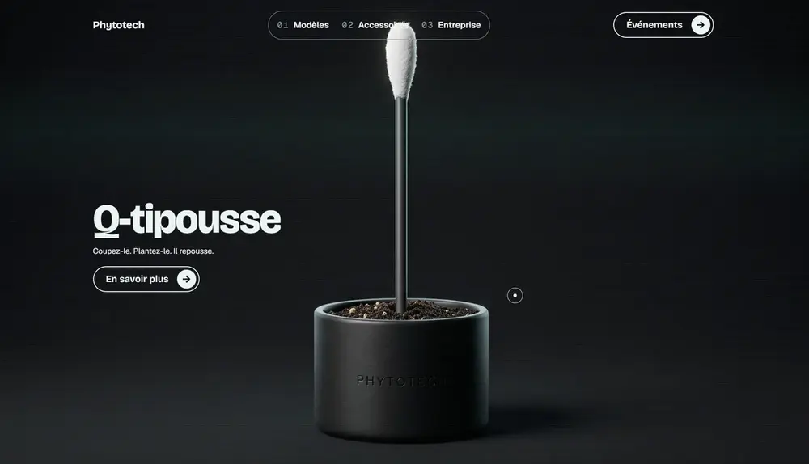

Ce que je propose …
Vidéo, son, motion, 3D et design web : je combine plusieurs compétences pour créer des expériences multimédias pensées pour chaque client.
Voir mes projetsMusicien, vidéaste et designer web.
Un jeune homme plein d’idées
Nathan Fortier
vidéo de présentation
Un peu de mon travail
À propos
Compétences & Loisirs
Une exploration croisée de mes compétences professionnelles et de mes passions personnelles.
- Compétences
- Loisirs
Mes forces
Sociabilité
01
Organisation
02
Polyvalence
03
Gestion du temps
04